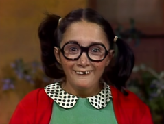
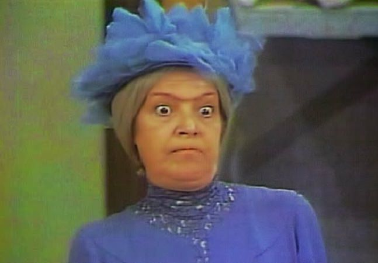
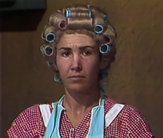
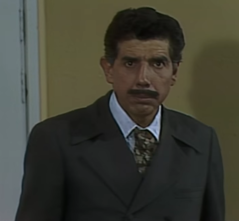

A filha do Seu Madruga
Chiquinha é a filha do Seu Madruga e amiga do Chaves e Quico. Ela tem 8 anos, e é a mais inteligente entre todas as crianças, porém também a mais astuta e mal-comportada (na escola e na vila). Sempre consegue arrumar um jeito de se aproveitar dos idiotas Quico, e do Chaves, por quem tem uma "ingênua e profunda" paixão não-correspondida
A Bruxa do 71
A senhora que vive no apartamento 71 é constantemente irritada pelas crianças da vizinhança: pela sua aparência física, foi apelidada de "Bruxa do 71", apelido que a deixa furiosa, e que ela tem cara de velha. Clotilde nutre por Seu Madruga uma paixão não-correspondida e tenta, a todo custo, conquistar o coração do homem utilizando deliciosos bolos e frangos assados. Clotilde vive sozinha, com a única companhia de seu cãozinho Satanás (que também já foi um gato), a quem cuida como se fosse um filho. Os únicos parentes conhecidos de Clotilde são sua sobrinha e irmã, que mora em Paris. A sobrinha, ainda bebê, já foi levada para a vila.
Mamãe do Quico
Viúva do apartamento 14, ela é a mãe do Quico. É esnobe e se acha moral, econômica e socialmente melhor do que todo mundo, por ser de família rica e tradicional. É viúva de um marinheiro, também chamado Frederico. Depois que este morreu, Florinda passou a receber uma pensão, da parte do governo. Só que a pensão é muito pouca e, por isso, vive atualmente num cortiço de periferia. Seu nome completo é Florinda Corcuera e Villalpando, viúva de Matalascallando. Ela protege Quico de tal forma que é capaz de bater no Seu Madruga, geralmente sem querer ouvir explicações dele. Apesar de ser mesquinha e superprotetora, Florinda mostra ser caridosa com Seu Madruga e Chiquinha em poucos episódios, e rígida com Quico, chamando-o pelo nome e proibindo-o de comer e sair de casa. Em certo ponto da história, ela abre um restaurante batizado com seu nome. É constantemente chamada de "velha coroca" e outros apelidos ofensivos por outros personagens, como Chaves e Chiquinha. Vive um romance com Professor Girafales.
Mestre Linguiça
Professor Girafales é o pomposo e intelectual professor da escola onde estudam Chaves, Chiquinha, Quico, Nhonho, Pópis, Godinez e Paty. Girafales é impaciente e irritado.
Vaidoso, Girafales se acha superior intelectualmente e fisicamente a todos os outros, principalmente Seu Madruga. Também diz ter conhecimentos em diversas áreas diferentes, como a carpintaria e a botânica. Para se mostrar inteligente, Girafales usa palavras difíceis em conversas cotidianas.